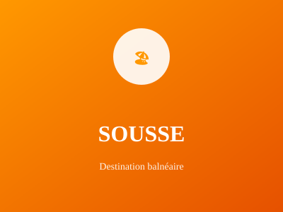

La Perle du Sahel

Troisième ville de Tunisie, Sousse est surnommée "la Perle du Sahel". C'est une destination touristique majeure avec une médina historique inscrite au patrimoine mondial et des plages magnifiques.